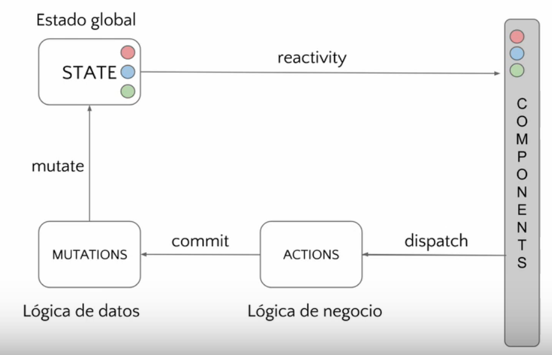

CLASE 5 - VUEX
¿Qué veremos en la clase?
- ESTADO
- BUS
- VUEX
0 - ESTADO
El estado es una abstracción referida a los datos de la aplicación en un momento concreto y parte del modelo.
- Si el modelo fuese: contador, entero
- El estado sería 1,2,3, los valores que tiene el modelo en un momento concreto
Sobre el estado:
- Suena complicado, es algo abstracto
- Se manipula de forma intuitiva programando
- Es fácil despreocuparse por él
- Los problemas suelen surgir cuando ya es "demasiado" tarde
0.1 Problema de aplicaciones SPA grandes
La componentización de la web viene a raiz de que los modelos, controladores y vistas se estaban volviendo gigantes y bastante inmanegables. Por ellos, cada componente ahora cuenta con su propio MVC, que está muy bien.
El problema es que es dificil compartir estados entre los componentes, si es de un padre a un hijo o de un hijo a un padre es facil. En la segunda clase vimos que el padre pasa props al hijo y el hijo emite eventos al padre.
Una vez va creciendo el proyecto podemos tener una jerarquía de muchos más niveles y es muy complicado comunicar cambios que avarquen 2 o más de estos. A parte estamos obligados a que el componente intermedio tenga que comunicarse con los componentes jerarquicos superior e inferior si quieren hablarse entre ellos.
Tenemos más problemas:
- El estado se encuentra distribuido.
- Nuestro arbol de estados no tiene porque ser igual al DOM.
- Es complicado tenerlo sincronizado.
0.2 Soluciones propuestas (state management):
Para atajar a este problema se crearon dos soluciones:
- BUS de eventos: Un componentes invisible con el que el resto de componentes pueden comunicarse independientemente de su nivel en la jerarquía.
- VUEX: Se centraliza el estado, se distribuye a los componentes.
Si se usa un bus de eventos en muchos componentes es facil perder el hilo del estado (datos)
1 - BUS
Yo en vez de usar un bus con eventos a los qeu los componentes se suscriben, creo un bus de datos a los que acceden y guardan datos los componentes.
Bus como modulo js externo
Bus como plugin de vue
2 - VUEX (Documentación)
Es una libreria basada en flux que permite manejar el estado con conceptos simples.
- Centraliza el estado
- El estado es de solo lectura y da acceso a todos los componentes a sus datos a través de sus getters.
- Se puede cambiar mediante mutaciones que normalmente son llamadas desde acciones.
2.1 ESTADO:

Como podemos ver son los datos en si mismos.
2.2 MUTACIONES:
- Son funciones casi puras (sin efectos colaterales).
- Son sincronas, para que se produzcan de forma inmediata y la reactividad fluya.
- Pueden ser comiteadas directamente por los componentes, pero no se debería
- Su función es recibir datos y modificar el estado.
- Manejar la lógica de los datos
mutations: {
addActivity(state, activity) {
state.activities.push(activity);
},
deleteActivity(state, activity) {
state.activities = state.activities.filter((val) => val.id !== activity.id);
},
},
Siempre reciben el estado y pueden recibir más parámetros y a partir de ellos mutarlo.
2.3 ACCIONES:
- Son funciones que pueden ser asincronas.
- Las acciones se pueden componer, se pueden llamar entre ellas.
- Pueden llamar a API y commitean mutaciones.
- Manejan la lógica de negocio.
actions: {
incrementAsync ({ commit }) {
setTimeout(() => {
commit('increment')
}, 1000)
},
addActivity({commit}, {activity}) {
commit('addActivity', activity)
},
}
2.4 GETTERS:
Son estados derivados, un simil a las computed properties de los componentes.
Ejemplo, Edad: puedes guardarlo por fecha de nacimiento o entero.
const store = new Vuex.Store({
state: {
todos: [
{ id: 1, text: '...', done: true },
{ id: 2, text: '...', done: false }
]
},
getters: {
doneTodos: state => {
return state.todos.filter(todo => todo.done)
}
}
})
2.5 RESUMEN:

- Los componentes ya serían solo VC y se encargan de su vista.
- Los componentes dispathan acciones.
- Las acciones pueden llamar a la API y comitean mutaciones.
- Las mutaciones mutan el estado.
- El estado rederiza los componentes y mediante getters podemos adaptar el estado.
2.6 VENTAJAS EXTRA DE VUEX:
- Te hace pensar sobre el estado.
- Te añade dos capas de abstracción (negocio y datos).
- Evita hacer de puente entre dos componentes.
- De repente tienes una "caché".
- Las store son modulables de forma fractal. Se pueden separar.
- Permite Hot Module Replacement con webpack*.
- Permite Time-traveling con las dev tools.
2.7 BUENAS PRACTICAS:
- El estado debe modelarse pensando solo en los datos, evitando la redundancia, los getters pueden servirlo de forma más cómoda.
- Puede seguir existiendo estado local y comunicaciones padre-hijo, normalmente cosas puramente UI.
- Los componentes solo deberían comitear acciones.
- Las mutaciones deben centrarse solo en manipular los datos. Las acciones llevan la lógica de negocio.